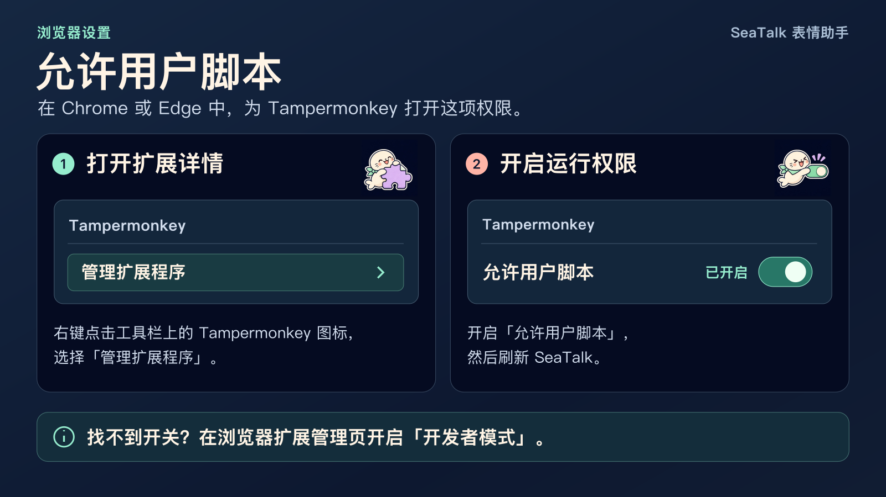

SeaTalk 表情助手 · 安装指南

安装步骤与链接
- 从 Tampermonkey 官网安装扩展，并确认它已启用。
- 在 Chrome 或 Edge 的扩展详情页开启「允许用户脚本」。若浏览器没有这个选项，可在扩展管理页开启「开发者模式」。
- 打开 Greasy Fork 脚本页，点击「安装此脚本」，再刷新 SeaTalk 网页版。
打开一个单聊或群聊，点输入框工具栏里戴薄荷绿围巾的小海豹，打开「表情快选」。点一张表情会直接发送，点「管理表情」可以整理收藏。若提示收藏尚未载入，先在 SeaTalk 原生表情面板打开一次爱心「收藏」，再回到快选。